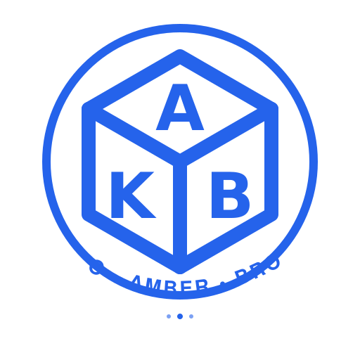

確認圖片
確認要傳送這張圖片給 AI 進行分析嗎？

KURO 是阿蘇男孩的看板犬，車內外共有**101隻不同造型的 KURO 圖案**，可以讓孩子們尋找，增添旅途樂趣！
第3節車廂後方是兒童專屬空間，設有**木球池**（請注意開放時間）和**兒童圖書室**。
此外，還有**哺乳室**和多功能廁所，確保帶著小小孩的家長也能舒適搭乘。
**景觀車廂 (第1和第4節)**：設有全景大窗戶，視野絕佳，能欣賞阿蘇沿線風景。
**親子座位 (White Seats)**：有面對面、附桌子的座位，非常適合家庭用餐或互動，是預訂時的首選！
💡 使用小撇步：日本車載導航輸入 Map Code 最為精準。若 Map Code 查無地點，使用下方提供的電話號碼 (Tel) 導航是最佳備案。
租車通常需「加滿油還車 (満タン返し)」，請保留最後一次加油收據。
一般租賃轎車（如 Toyota Corolla/Yaris）通常加 紅色 Regular (レギュラー)。請務必確認租車合約。
⚠️ 出發前確認驅動輪 (前驅/後驅/四驅)
*行駛雪鍊路段請保持時速 30-50km/h 以下。
您的行程經過阿蘇山、黑川溫泉、由布院等山區，1月下旬為冬季旺季，請務必留意：
雪胎： 請務必與租車公司確認您的車輛是否配備**雪胎 (Snow Tires)**。若無雪胎，可能無法進入部分積雪的山區。
雪鏈： 在租車時，確認是否備有雪鏈並知道如何使用。部分路段如遇大雪，會強制要求加裝雪鏈。
**黑川至別府/由布院：** 山路較多，下午 5 點後天色會完全變暗。Day 3 的行程需要跨越山區，請盡量在白天完成大部分移動。
**結冰風險：** 早晨或深夜，橋樑和山區背光路段容易結冰，請減速慢行，與前車保持安全距離。
這是熊本最主要的兩條拱廊商店街，皆為室內空間，即使下雨也不怕。搭乘熊本市電至「通町筋」或「辛島町」站即可到達核心區域。
上通偏向**文青、精品、咖啡廳**和**本地老店**，氣氛相對安靜優雅。適合想找特色小店、書店或喝下午茶的家庭。
下通是最熱鬧的一段，以**藥妝店、服飾連鎖店、電玩店**和**餐飲店**為主，充滿庶民活力。大部分知名的熊本拉麵店（如天外天）和豬排店（如勝烈亭）都在附近巷弄中。
這是黑川溫泉最大的特色！只要購買一枚木製的「入湯手形」(約 1,500円)，即可任選 3 間旅館的露天溫泉泡湯。
黑川全村為了維護景觀，建築統一使用黑色與木質調，沒有霓虹燈，只有柔和的燈籠，非常適合穿著浴衣拍照。
從由布院車站出來，沿著正前方的道路直走，雖然會看到壯觀的由布岳，但精華區其實在右前方的「湯之坪街道」。
建議動線： 車站 → B-speak (蛋糕捲) → 湯之坪街道 (主戰場) → Floral Village (童話村) → 金鱗湖。
*全程步行單趟約 20-30 分鐘 (不含逛街)，沿路非常平坦好走，適合推車。
仿照英國科茨沃爾德 (Cotswolds) 打造的黃色矮房聚落。這裡有：
**費用總計：** 若選擇「入園 + 叢林巴士」，每位成人約 ¥4,000。
因巴士座位有限且需當日現場排隊購票，強烈建議：
💡 為什麼要這麼早？
旺季時開園前門口常有自駕車陣排隊。早點到是為了確保能買到「上午時段」的巴士票，以免行程被拖到下午，影響後續前往由布院的時間。
叢林巴士是必玩項目！建議您提前預約，以確保有位子，特別是週末或假期。
想要完整體驗動物園，建議將自駕觀賞與巴士餵食結合：
**先開您自己的租賃車**進入 Safari Zone 逛一圈。這樣可以從容地用自己的速度觀賞動物，且車內空間大較為舒適。
**優點：** 感受動物靠近車輛的震撼感，不受時間限制。
**隨後再搭乘叢林巴士**。巴士會在車上定點停車，讓孩子們親手將飼料從防護網餵給動物。這是自駕無法取代的互動樂趣！
**時程安排：** 建議 14:30 抵達後，先快速自駕一圈 (約 30-40 分鐘)，再接著搭乘預約好的巴士場次 (約 50 分鐘)。
參觀完 Safari Zone 後，請務必到親近區走走。這裡有**袋鼠、天竺鼠**等可愛的小動物可以摸摸抱抱，還有**騎馬體驗**（需另外付費），非常適合小朋友玩樂，通常會花費 1-1.5 小時。
查看動物公園官網 (搜尋)這是一個專為學齡前兒童設計的夢幻樂園，位於市中心，交通極度便利（地鐵直結）。
**注意：** 館內通常禁止飲食（嬰兒副食品除外），且嬰兒車需寄放在入口處。
知名吐司專賣店的咖啡廳，位於博多站 AMU PLAZA 5樓 (大鐘旁手扶梯上去)。必吃「水果鮮奶油三明治」，吐司極度柔軟，鮮奶油清爽不膩。
*位置極佳，適合等待回程列車或剛抵達時享用。
導航至 AMU PLAZA 店如果不習慣重口味的拉麵或內臟鍋，「博多水炊鍋 (Mizutaki)」是親子首選。雞湯濃郁充滿膠原蛋白，雞肉軟嫩，口味清爽健康，最後的雜炊粥更是精華。
*博多站與天神都有多家分店，晚餐建議預約。
搜尋附近分店福岡在地人氣超高的拉麵店。相比一蘭，它的麵條極細，豚骨湯頭雖濃郁但較無腥味，且帶有甜味，小朋友通常接受度很高。
搜尋 Shin-Shin 拉麵超人氣排隊店！特色是「DIY 鐵板漢堡排」，店員會送上表面微熟的漢堡排，自己用筷子切下放在小鐵石上煎熟。雖然排隊隊伍通常很長，但用餐體驗非常有趣。
*注意：鐵板極燙且有油煙，若孩子太小需注意安全。
導航至極味屋2026年日本持續推動電子化退稅，建議事先於 Visit Japan Web 登錄護照資訊以產生免稅 QR Code。
嚴格禁止託運！請務必放在「手提行李」隨身登機。